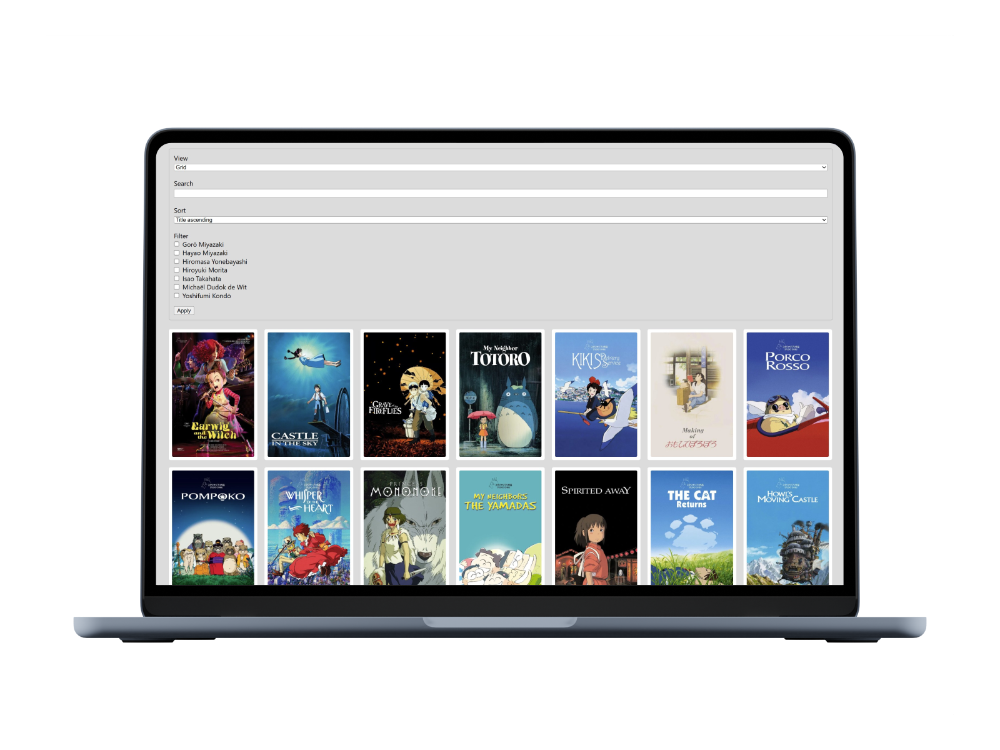

Catalogue Ghibli
Projet d’intégration JavaScript
Projet d’évaluation finale de mon cours de JavaScript. À partir d’un HTML et CSS déjà fournis, j’ai implémenté toute la logique en JavaScript Vanilla pour afficher dynamiquement les films du Studio Ghibli, avec tri, filtres et recherche en temps réel.
Technologies: HTML, CSS, JavaScript
Voir le dépôt GitHub

Détails du projet
Contexte
Le projet s’appuie sur la programmation orientée objet avec des classes modulaires, la manipulation du DOM, et l’utilisation de l’API History pour refléter les filtres appliqués dans l’URL sans rechargement.
Objectifs
- Intégrer une interface fluide et réactive
- Structurer le code avec des classes JavaScript
- Gérer les filtres, tri et recherche avec mise à jour en direct
- Optimiser l’expérience sans rechargement de page (SPA)
Résultats
- Comportement dynamique selon les critères sélectionnés
- Affichage en grille ou en liste selon la vue choisie
- URL dynamique générée avec paramètres GET
- Code maintenable, bien commenté et prêt pour évoluer